Отличительной особенностью белорусской кухни является широкое распространение блюд из картофеля, а также использование разнообразных колбас, круп, грибов и свинины.
Мясные блюда:
Зразы представляют собой котлету или мясной рулет с начинкой, обычно из отварных грибов или яиц.
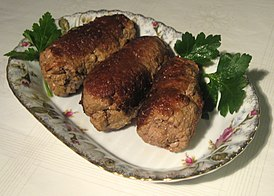
Полендвица представляют собой копченую говядину из филейной части или копченое свиное филе в виде колбасы.
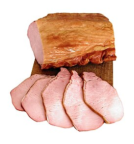
Мачанка готовится обычно из различных мясных обрезов. Другие составляющие мачанки — соус, мука, вода. Из приправ добавляют лук, грибы, укроп, реже перец.
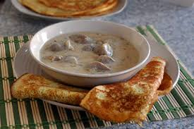
Выпечка:
Блины - блюдо выпекаемое из жидкого дрожжевого теста на сковороде.
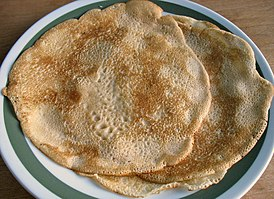
Пряник - мучное кондитерское изделие, выпекаемое из специального пряничного теста; печенье на меду или сахаре с пряностями.
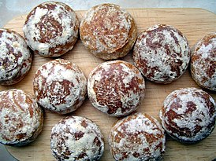
Оладьи - мучные изделия, выпекаемые (обжариваемые) из дрожжевого теста на сковороде. От блинов отличаются меньшим диаметром и большей толщиной, а тесто имеет более густую консистенцию.
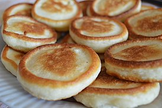
Супы:
Крупник готовят на овощном или мясном бульоне с пшеном, гречневой, перловой, кукурузной крупами, с добавлением жареного на растительном масле или сале репчатого лука, картофеля и сушёных грибов.
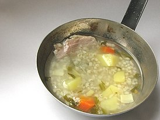
Холодник - холодный летний овощной суп из свёклы, щавеля или их комбинации. Не имеет точного состава продуктов и обнаруживает сходство со свекольником и зелёными щами.
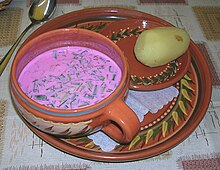
Уха - блюдо представляющее собой прозрачный отвар из свежей рыбы одного или нескольких видов, а также трёх овощей: картофеля, моркови и лука с различными приправами.
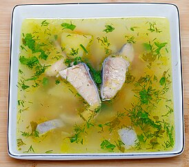
Картофель:
Картофельная бабка - картофель перемешанный с рубленым мясом, фаршем, которые заранее обжаривают, или шкварками. Для полноты вкуса в массу кладут перец, обжаренный лук, соль, специи.
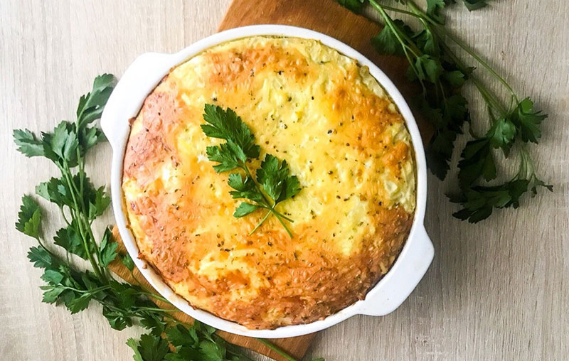
Драники состоят из тертого сырого картофеля, в который в качестве связующих элементов добавляют яйцо, чеснок или лук, специи и небольшое количество пшеничной муки.
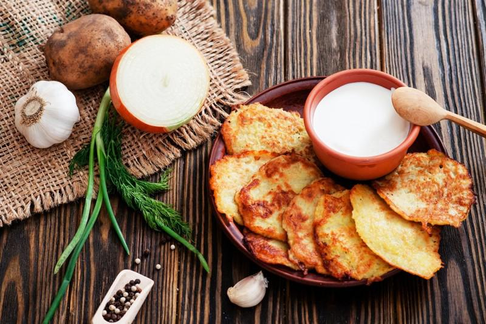
Колдуны в современном исполнении их готовят также, как и драники. Единственное отличие – наличие начинки внутри, которая может быть абсолютно любой: рубленая свинина, фарш, грибы, шкварки.